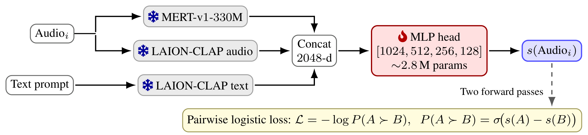
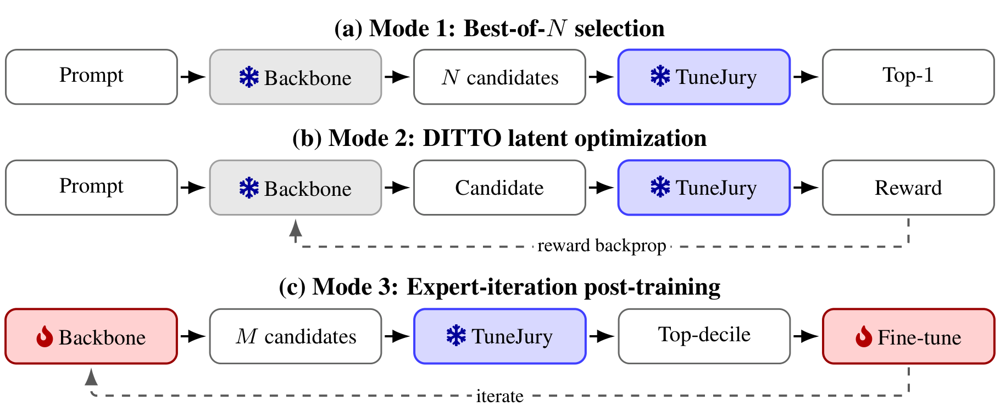
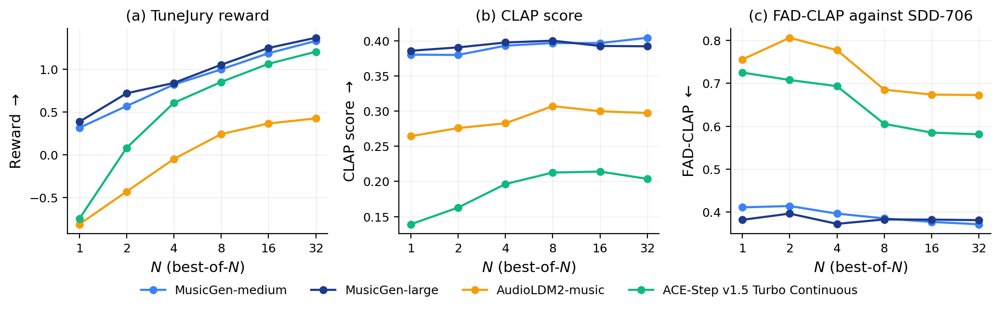

SDD-100 is our 100-prompt subset of the Song Describer Dataset, used for all three modes.
SDD-100 prompt 75: "A dark trance track featuring accordion, blending hypnotic rhythms with melancholic melodies and a pervasive, atmospheric mood." Only the noise seed differs between candidates.
SDD-100 prompt 0: "A melancholic rap piece driven by a steady drummachine beat, layered with subtle synth pads and a sparse electric guitar." Same backbone, same prompt; only the initial noise latent is optimized against the negative TuneJury reward (5 outer iterations, 8 inner steps, lr 0.05).
SDD-100 prompt 46: "A fast garage track featuring an electric guitar, driven by raw energy and a loose, rhythmic feel." Same backbone, same seed, same MeanAudio inference settings. Only the post-training (expert iteration on TuneJury's top-decile candidates) differs.
More examples (all four Mode 1 backbones, two Mode 2 backbones, and top-3 Mode 3 prompts) in the listening review demo.
TuneJury is an open instance-level pairwise reward model for text-to-music generation. It predicts a single music-preference scalar from a (text, audio) input, trained on ~17.5K human-rated A vs. B preference pairs (~22K total pool including validation and held-out test) from Music Arena, MusicPrefs, AIME, and SongEval. No pseudo-label augmentation.
TuneJury and CMI-RM share the RankNet pairwise paradigm. They differ on every other axis (paper §1, Table 1; T=text, L=lyrics, R=reference audio, A=candidate audio).
| Model | Framework | Input | Output | Supervision |
|---|---|---|---|---|
| TuneJury (ours) | RankNet pairwise | TA | 1-d scalar | ~17.5K human-rated pairs |
| CMI-RM | RankNet pairwise | TLRA | 2-d (align, qual) | ~6.6K human + ~110K pseudo |
| SongEval-RM | MOS regression | A | 5-d aesthetic | SongEval 5-axis MOS |
| Audiobox-Aesthetics | MOS regression | A | 4-d aesthetic | Audiobox MOS |
| MuQ-Eval | MOS regression | A | 2-d (align, qual) | MusicEval per-clip MOS |
| PAM score | Zero-shot audio-LM | TA | 1-d scalar | zero-shot |
On the OOD PAM and CMI-RewardBench Music Arena splits, TuneJury stays within 0.06 SRCC and 2 pp pairwise accuracy of the pseudo-augmented CMI-RM, despite 10× fewer head parameters and no pseudo-label augmentation.

Single MLP head over a frozen encoder stack, trained with the shared-weight pairwise logistic loss L = −log σ(s(A) − s(B)). Two encoder instantiations are released:
[1024, 512, 256, 128] → 1-d reward (~2.8M trainable parameters).[512, 256, 128, 64] → 1-d reward. Used for the encoder-swap probe in paper §A.D (matches or beats CLAP+MERT on 4 of 5 OOD axes at half the input dimensionality).
All three downstream applications share the same frozen TuneJury reward signal (blue). Mode 1 ranks frozen-backbone candidates by reward (gray = frozen). Mode 2 backpropagates reward into the noise latents at inference. Mode 3 fine-tunes the backbone (red = trainable) on its own top-reward decile.
The same frozen TuneJury reward signal drives three downstream applications with no further preference labeling:
Mode 1 Inference-time best-of-N selection. For each prompt, the backbone draws N candidate clips; the top-1 by TuneJury reward is kept. Reward stays strictly monotone in N up to N=32 on four frozen backbones (MusicGen-medium, MusicGen-large, AudioLDM2-music, ACE-Step Turbo Continuous).
Mode 2 Inference-time latent optimization (DITTO-style). Lifts mean reward by +0.25 on SAO-small (n=30, 19/30 prompts improved) and +1.56 on TangoFlux (n=100, 100/100 improved). AudioLDM2-music omitted (50-step backprop exceeds memory budget).
Mode 3 Expert-iteration post-training. +0.416 mean reward lift on FluxAudio-S at LR=1e-5 (75/100 prompts improved), mapping a reward-fidelity Pareto frontier across LR ∈ {1e-6, 5e-6, 1e-5}.

Mode 1 best-of-N sweep on four frozen open-weights backbones. (a) TuneJury reward monotone through N=32. (b) CLAP score (text-audio cosine) rises in parallel through N=8 then plateaus. (c) FAD-CLAP against SDD-706 improves at N=4 on three of four backbones (paper §5.1, Figure 3).
Bradley–Terry-based post-hoc per-system calibration. Recovers ~5 pp pairwise agreement on post-cutoff Music Arena battles with ~100 calibration pairs (~3 pp at K=30), at substantially better data efficiency than retraining over the swept K-grid (anchor K=10 matches retrain K=250, paper §A.D).
git clone https://github.com/yonghyunk1m/TuneJury.git
cd TuneJury
pip install -r requirements.txt
python -c "
from tunejury import Scorer
scorer = Scorer.from_pretrained('checkpoints/tunejury.pt')
print(scorer.score('your_audio.wav', prompt='your caption'))
print(scorer.score('your_audio.wav', prompt='')) # empty prompt -> OOD-safe (paper 4.2)
"
Full README, evaluation harness, and three-mode application code at the repo. Released under CC-BY-NC 4.0 (tracking MERT-v1-330M's constraint).
Works referenced by this project page. Full bibliography is in the paper.
Frozen encoders. Wu et al., LAION-CLAP (ICASSP 2023) · Li et al., MERT (ICLR 2024) · Zhu et al., MuQ (arXiv 2025).
Reward / quality models compared. Ma et al., CMI-RewardBench / CMI-RM (arXiv 2026) · Yao et al., SongEval / SongEval-RM (arXiv 2025) · Tjandra et al., Audiobox-Aesthetics (arXiv 2025) · Zhu and Li, MuQ-Eval (arXiv 2026) · Deshmukh et al., PAM (Interspeech 2024).
Training data sources. Kim et al., Music Arena (NeurIPS Creative AI 2025) · Huang et al., MusicPrefs (ISMIR 2025) · Grötschla et al., AIME (ICASSP 2025) · Yao et al., SongEval (arXiv 2025).
Generation backbones (Mode 1 / 2 / 3). Copet et al., MusicGen (NeurIPS 2023) · Liu et al., AudioLDM 2 (TASLP 2024) · Gong et al., ACE-Step (arXiv 2025) · Novack et al., Stable Audio Open Small (SAO-small) (arXiv 2025) · Hung et al., TangoFlux (ICLR 2026) · Li et al., MeanAudio / FluxAudio-S (arXiv 2025).
Open-license reward-score collections. Bogdanov et al., MTG-Jamendo (ML4MD@ICML 2019) · Defferrard et al., FMA (ISMIR 2017) · Law et al., MagnaTagATune (ISMIR 2009) · Humphrey et al., OpenMIC-2018 (ISMIR 2018) · Agostinelli et al., MusicLM / MusicCaps (arXiv 2023) · Melechovsky et al., MidiCaps (ISMIR 2024) · Manco et al., Song Describer Dataset (SDD) (ML4Audio@NeurIPS 2023).
Methods. Burges et al., RankNet (ICML 2005) · Novack et al., DITTO (ICML 2024) · Anthony et al., Expert Iteration (NeurIPS 2017) · Singh et al., ReSTEM (TMLR 2024) · Bradley & Terry, Bradley–Terry (Biometrika 1952) · Gao et al., Scaling laws for reward-model overoptimization (ICML 2023).
Side metrics. Kilgour et al., FAD (Interspeech 2019) · Gui et al., FAD-X encoder variants (ICASSP 2024) · Huang et al., MAD (MAUVE-Audio) (ISMIR 2025) · Guo et al., Calibration / ECE (ICML 2017).
@misc{tunejury2026,
title = {TuneJury: An Open Metric for Improving Music Generation Preference Alignment},
author = {Kim, Yonghyun and Lee, Junwon and Xia, Haiwen and Ma, Yinghao and Koo, Junghyun and Saito, Koichi and Mitsufuji, Yuki and Donahue, Chris},
year = {2026},
eprint = {2606.17006},
archivePrefix = {arXiv},
primaryClass = {cs.SD},
url = {https://arxiv.org/abs/2606.17006},
}
We thank the maintainers of LAION-CLAP, MERT-v1-330M, and MuQ-MuLan-large for releasing their pretrained encoders; the authors of Music Arena, MusicPrefs, AIME, and SongEval for the open preference and aesthetic-rating sources; and the developers of the backbone audio generators (MusicGen, AudioLDM2-music, ACE-Step Turbo Continuous, Stable Audio Open-small, TangoFlux, FluxAudio-S) used in the Mode 1–3 demonstrations.